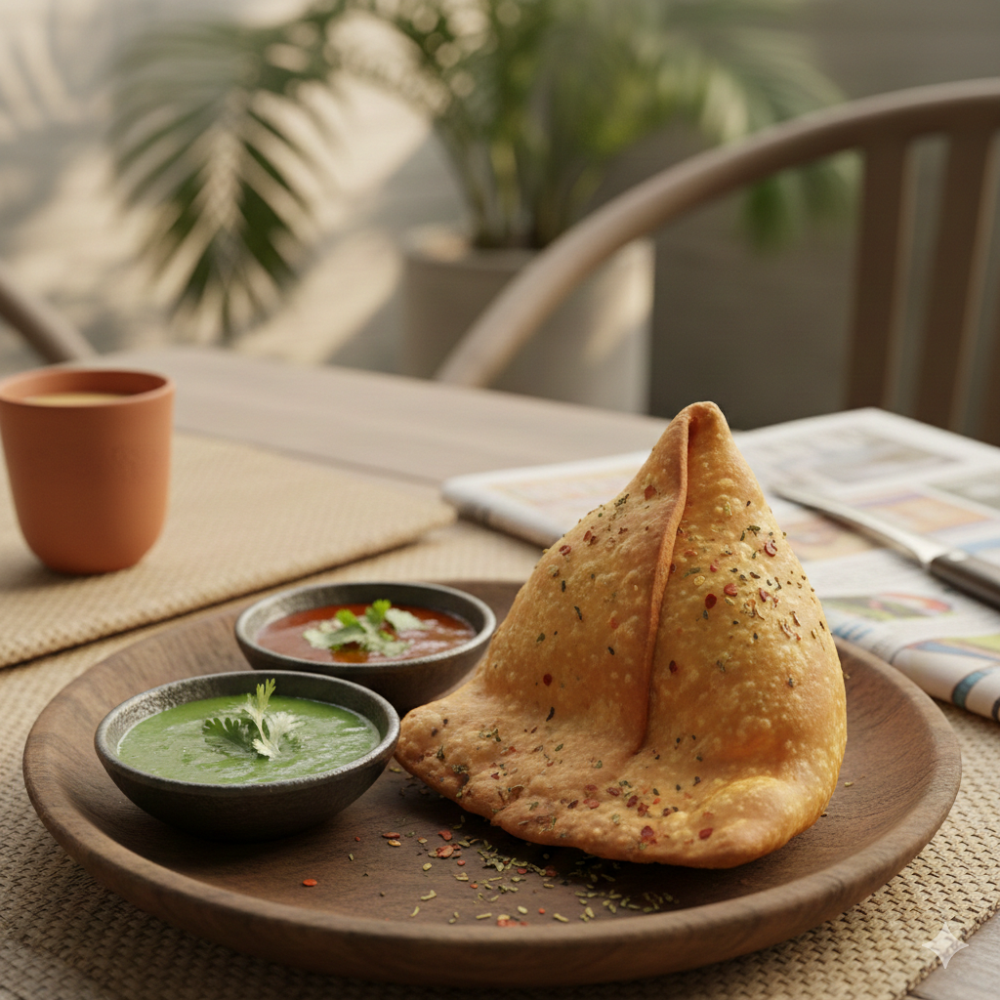

Home
Samosa Recipe

Description
A samosa is a beloved deep-fried pastry known for its iconic triangular shape and impeccably crisp, golden-brown crust. Traditionally filled with a savory mixture of spiced potatoes, peas, and aromatic herbs, it serves as a staple snack across South Asia. This handheld treat is celebrated for the satisfying crunch of its exterior, which yields to a warm, flavorful, and soft interior.
Often enjoyed alongside a steaming cup of masala chai, samosas are typically served with vibrant mint or tangy tamarind chutneys. While the potato filling is most common, regional variations include minced meat, lentils, or even sweet preparations to suit different palates. Their immense popularity at street stalls and festive gatherings makes them a universal symbol of comfort food and hospitality.
Ingredients
Dough (Outer Shell)
- All-purpose flour (Maida)
- Ghee or oil
- Ajwain (carom seeds)
- Water
- Salt
Filling
- Potatoes (boiled and mashed)
- Green peas
- Green chilies
- Ginger
- Coriander leaves
- Cumin seeds
- Coriander powder
- Garam masala
- Amchur (dried mango powder)
- Turmeric powder
- Salt
- Oil (for frying)
Steps
- Start by mixing all-purpose flour, salt, and carom seeds (ajwain) in a large bowl. Incorporate ghee or oil into the flour by rubbing it between your fingers until the mixture resembles coarse breadcrumbs, which ensures a flaky crust. Gradually add cold water and knead it into a stiff, firm dough; cover it with a damp cloth and let it rest for at least 30 minutes to develop the right texture.
- Heat a small amount of oil in a pan and temper cumin seeds until they sizzle, then add finely chopped ginger and green chilies. Stir in boiled, cubed potatoes and green peas along with spices like coriander powder, garam masala, amchur, and turmeric. Sauté the mixture for a few minutes while mashing the potatoes slightly, then garnish with fresh coriander leaves and let the filling cool completely before use.
- Divide the rested dough into small balls and roll each one into an oval shape, then cut the oval in half to create two semi-circles. Take one semi-circle, fold the straight edge to form a cone, and seal the seam with a little water. Stuff the cone with a generous spoonful of the cooled potato mixture, brush the top edges with water, and pinch them tightly together to create a secure, upright triangular pouch.
- Heat oil in a deep pan on low-to-medium heat, ensuring it is not too hot so the crust cooks evenly without bubbling. Gently slide the samosas into the oil and fry them slowly, turning occasionally, until they turn a deep golden brown and become crisp on all sides. Drain the finished samosas on paper towels to remove excess oil and serve them hot with your favorite chutneys.